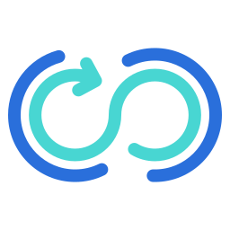

Hi.I'm Sanje'.An Agile Enthusiast

For over 15 years I've been helping organisations deliver value in ever more challenging market conditions.
● Customer satisfaction is prioritized.
● Emphasis is placed on delivering end products rather than intermediate artifacts.
● Iterative working approach with prompt feedback loops.
● Ceremonies and documentation are deemed necessary and sufficient.
● Change is expected and embraced.
● Waste or overheads are eliminated.
● Concurrent work is favored over consecutive work.
● Quality is emphasized from the early stages of the project.
● Independent silos of practice, knowledge, or control are minimized.
● Continuous improvement and introspection are encouraged. ● Coaching, mentoring and training
Agile isn't a methodology or process on its own, but instead, it's a way of thinking and a broad term encompassing numerous frameworks and practices that uphold common principles and values. Regardless of the methodologies utilized, organizations or teams that triumph in adopting Agile practices share numerous characteristics.
Certifications.
Certified SaFe 5 Agilist
Certified SaFe 5 Product Owner/Product Manager
Certified AWS Solution Architect
Certified Google Cloud Platform Business Professional
Completed Training on Azure Fundamentals
Certified Oracle Database Admin
Sun Certified System Administrator
Salesforce Administrator
Certified SWIFT Security Officer
Trained Project Management Professional (PMP)
Skills.
| Agile Methodologies (SCRUM/Kanban/Lean) |
Python |
| Stakeholder Management |
Oracle DB |
| Risk Management |
Salesforce Administrator |
| Jira/Confluence/Trello |
Grafana/Newrelic |
| Cross Functional Team Leadership |
Kubernetes/Terraform |
| Service Management |
Git/Jenkins/Docker |
| L1/L2/L3 Support |
AWS/Azure/Google Cloud |
| Change Management |
SWIFT |
Get In Touch
If you're passionate about Agile and delivery.
let's connect! I'd love to chat with you about best practices and tips for successful project delivery using Agile methodology.
CONTACT ME